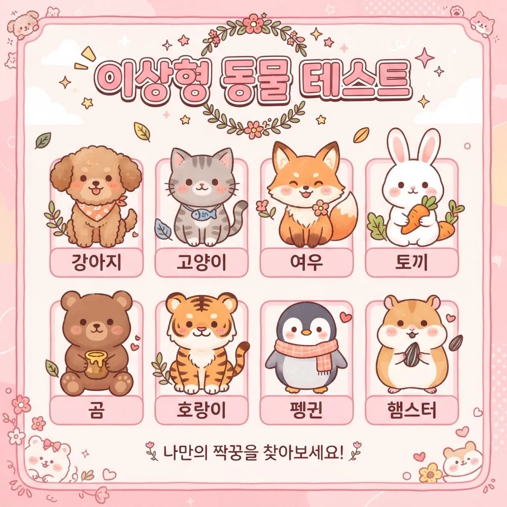

8문항으로 알아보는 나의 이상형 동물 (재미용)

결과를 분석하고 있습니다...
당신의 결과는
이상형 동물 테스트는 8개의 질문에 답하면 나의 연애 스타일을 동물 캐릭터로 진단하는 심리 퀴즈입니다. 좋아하는 사람이 생겼을 때의 행동, 연락 습관, 싸웠을 때의 반응을 유형별 점수 합산으로 분석해 리트리버형부터 햄스터형까지 8가지 중 나와 가장 맞는 이상형 동물을 알려드립니다. "내가 연애할 때 어떤 동물 같을까?"라는 가벼운 호기심에서 출발한 오락 콘텐츠입니다.
썸 단계에서 상대의 스타일이 궁금한 분, 연애 중인 커플이 서로를 알아가는 놀이를 찾는 분께 잘 맞습니다. 특히 결과마다 잘 맞는 상성이 표시되므로, 커플이 각자 테스트한 뒤 상성을 대조하면 대화가 끊이지 않습니다. 동물 캐릭터라 부담 없이 놀리기 좋은 것도 장점입니다.
Q. 결과는 저장되거나 공유되나요?
아니요. 답변과 결과는 브라우저에서만 처리되며 서버로 전송되지 않습니다. 페이지를 벗어나면 사라집니다.
Q. 몇 번이나 반복해서 할 수 있나요?
무제한 무료입니다. 답변을 바꿔가며 다른 유형도 확인해보세요.
Q. 결과를 친구에게 공유할 수 있나요?
결과 화면 하단의 '링크 복사하기' 또는 '공유하기' 버튼으로 공유할 수 있습니다.
Q. 결과 유형은 몇 개인가요?
총 8개입니다. 각 문항의 보기는 특정 동물 유형에 가중치를 주며, 8문항의 합산 점수가 가장 높은 유형이 결과로 나옵니다. 동점인 경우 먼저 정의된 유형이 표시될 수 있습니다.
Q. 상성 결과는 정확한가요?
상성은 각 유형의 성격을 빗대어 짝지은 재미용 해석입니다. 실제 궁합을 단정하는 것이 아니니 가볍게 즐겨주세요.
근본적인 연애 스타일은 연애 유형 테스트에서, 매력 발산 방식은 플러팅 능력 테스트에서 확인해보세요. 숨겨진 바람기 지수는 바람기 테스트가 알려드립니다.
모든 결과는 재미와 오락을 위한 참고용 해석입니다.